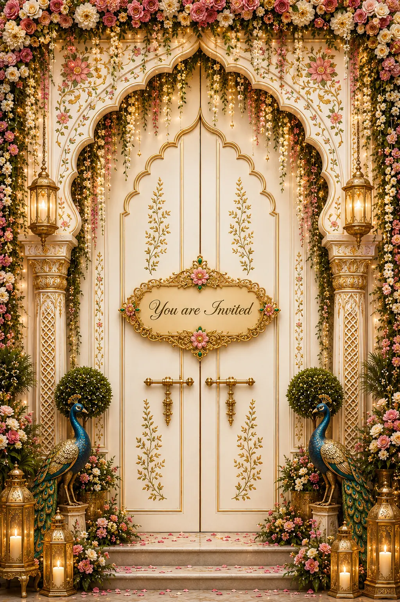
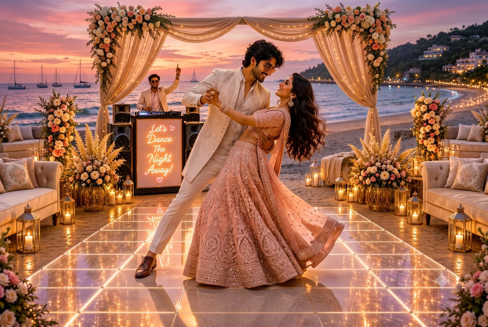
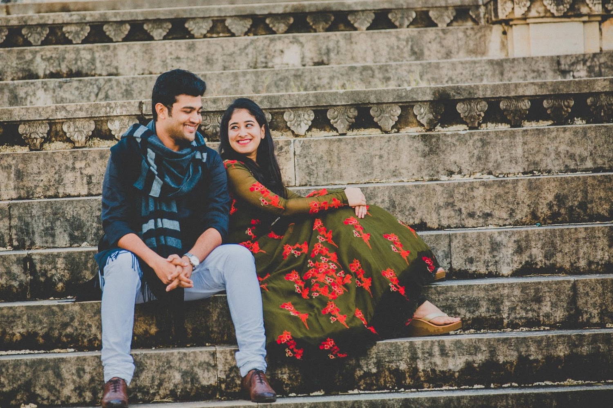
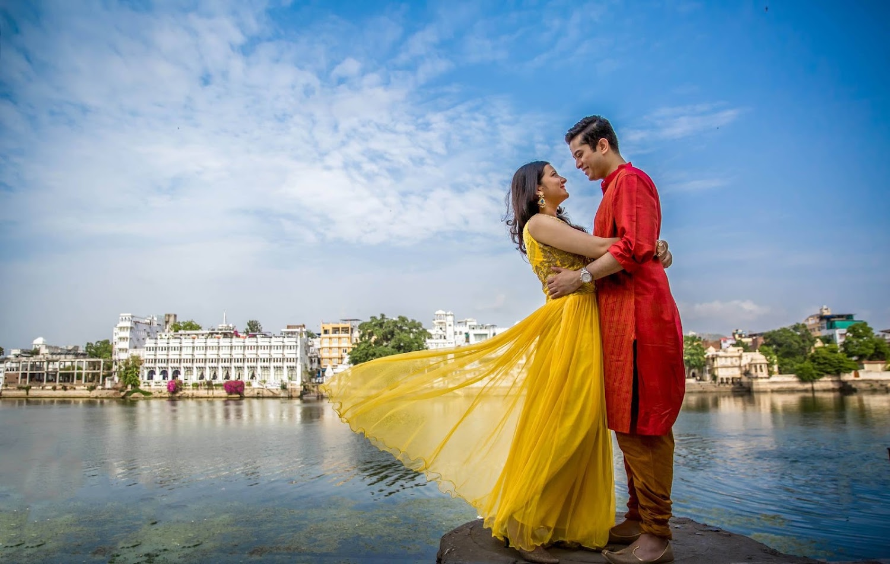

We are thrilled to announce that
Mayank
(S/o Vishesh & Radhika Agrawal)
&
Shreya
(D/o Rajiv & Sanya Malhotra)
Are tying the knot on 25th November 2026

Loading the film…
We are thrilled to announce that
(S/o Vishesh & Radhika Agrawal)
(D/o Rajiv & Sanya Malhotra)
Are tying the knot on 25th November 2026

Save the date
Tying the knot on
25th November
2026
Scratch the golden card
A glimpse of us


Swipe to explore
The celebrations
Drag or scroll sideways to see them all
The venue
Be our guest
Let us know if you’ll be celebrating with us. We can’t wait to see you there.
Your reply is safely with us. We cannot wait to see you there.
If your plans ever change, your seat will always be here for you.💛
This is a sample invitation, so replies are not collected. On your own invitation every RSVP arrives straight in your inbox.